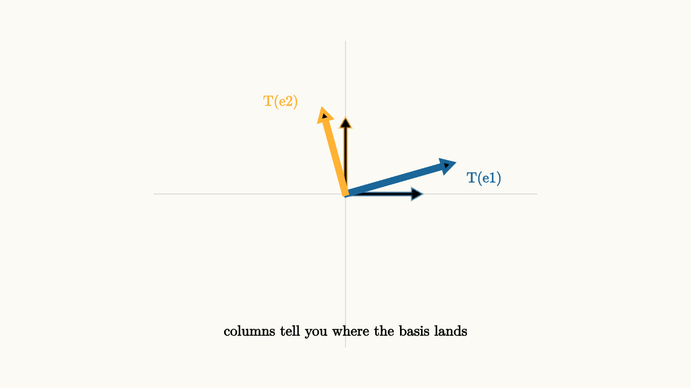
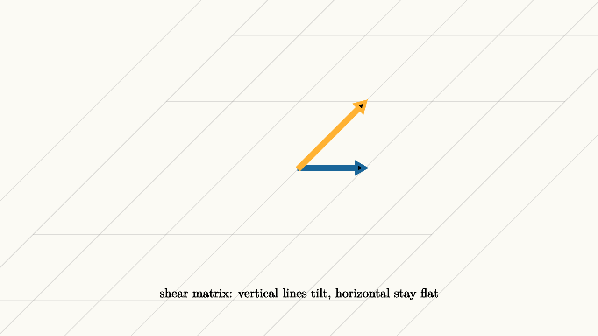

Matrices Move the Whole Plane
Here is a remarkable fact: you can completely describe what a certain kind of transformation does to the entire infinite plane using just four numbers.
Think about that. The plane has infinitely many points. Each one moves somewhere else. And yet the whole story fits in a two-by-two grid of numbers. How is that possible?
The answer is the linearity constraint. A linear transformation must play nicely with vector addition and scaling. That single requirement forces the transformation to be extraordinarily predictable. Once you know where two particular vectors go, you know where everything goes.
That is the entire secret of matrices. They are compact encodings of transformations that respect the move-combination structure of vectors.
Two Vectors Determine Everything
Recall from the previous essay that any vector in the plane can be written as a combination of the two standard basis moves:
Now suppose T is a linear transformation -- a function from vectors to vectors that respects addition and scaling. Apply T to both sides:
Then:
The first column is where e1 goes. The second column is where e2 goes. That is the entire meaning of a matrix.
Reading a Matrix: The Column Interpretation
This column interpretation is the most important way to read a matrix. It is worth slowing down and really seeing it.

source
background = [0.985, 0.98, 0.955, 1]
camera = Camera(4.5b)
mesh diagram = block {
. stroke{alpha{0.3} GRAY, 1} Line(start: [-2.5, 0, 0], end: [2.5, 0, 0])
. stroke{alpha{0.3} GRAY, 1} Line(start: [0, -2, 0], end: [0, 2, 0])
. stroke{alpha{0.5} BLUE, 2} Arrow(start: [0, 0, 0], end: [1, 0, 0])
. stroke{alpha{0.5} ORANGE, 2} Arrow(start: [0, 0, 0], end: [0, 1, 0])
. stroke{BLUE, 4} Arrow(start: [0, 0, 0], end: [1.4, 0.4, 0])
. stroke{ORANGE, 4} Arrow(start: [0, 0, 0], end: [-0.3, 1.1, 0])
. color{BLUE} center{[1.8, 0.2, 0]} Text("T(e1)", 0.68)
. color{ORANGE} center{[-0.85, 1.2, 0]} Text("T(e2)", 0.68)
. color{BLACK} center{[0.0, -1.8, 0]} Text("columns tell you where the basis lands", 0.68)
}The pale arrows are the original basis vectors. The bold arrows are where they land. Everything else in the plane must follow these two landing instructions because of linearity.
Take the matrix:
Column one (1, 0) becomes (3, 0). Column two (0, 1) becomes (0, 2). The plane stretches horizontally by 3 and vertically by 2. Any rectangle becomes a larger rectangle.
Rotation by 90 degrees counterclockwise:
Column one: e1 stays at (1, 0). Column two: e2 moves from (0, 1) to (1, 1). The vertical axis has been pushed one unit to the right. Horizontal lines stay flat. Vertical lines tilt at 45 degrees. The whole effect is like pushing the top of a deck of cards sideways while the bottom stays fixed.

source
background = [0.985, 0.98, 0.955, 1]
camera = Camera(4.5b)
let Grid = |a, b, c, d| block {
for (i in range(-4, 5)) {
. stroke{alpha{0.25} GRAY, 1} Line(start: [a * i + c * -3, b * i + d * -3, 0], end: [a * i + c * 3, b * i + d * 3, 0])
. stroke{alpha{0.25} GRAY, 1} Line(start: [c * i + a * -3, d * i + b * -3, 0], end: [c * i + a * 3, d * i + b * 3, 0])
}
}
mesh diagram = block {
. Grid(1, 0, 1, 1)
. stroke{BLUE, 4} Arrow(start: [0, 0, 0], end: [1, 0, 0])
. stroke{ORANGE, 4} Arrow(start: [0, 0, 0], end: [1, 1, 0])
. color{BLACK} center{[0, -1.9, 0]} Text("shear matrix: vertical lines tilt, horizontal stay flat", 0.68)
}Matrix-Vector Multiplication as a Journey
Once you read matrices as column instructions, matrix-vector multiplication becomes a natural operation rather than an algorithm to memorize.
To compute Av for a vector v = (x, y):
1. Read out x and y -- the coordinates of v in the standard basis. 2. Multiply the first column of A by x. 3. Multiply the second column of A by y. 4. Add those two scaled columns together.
source
background = [0.985, 0.98, 0.955, 1]
camera = Camera(4.5b)
let Grid = |a, b, c, d| block {
for (i in range(-4, 5)) {
. stroke{alpha{0.25} GRAY, 1} Line(start: [a * i + c * -3, b * i + d * -3, 0], end: [a * i + c * 3, b * i + d * 3, 0])
. stroke{alpha{0.25} GRAY, 1} Line(start: [c * i + a * -3, d * i + b * -3, 0], end: [c * i + a * 3, d * i + b * 3, 0])
}
}
"start: identity"
mesh grid = Grid(1, 0, 0, 1)
mesh e1 = stroke{BLUE, 4} Arrow(start: [0, 0, 0], end: [1, 0, 0])
mesh e2 = stroke{ORANGE, 4} Arrow(start: [0, 0, 0], end: [0, 1, 0])
mesh lbl = color{BLACK} center{[0, -1.9, 0]} Text("start with standard orientation", 0.68)
play Write(0.8)
"apply rotation"
grid = Grid(0.8, 0.6, -0.6, 0.8)
e1 = stroke{BLUE, 4} Arrow(start: [0, 0, 0], end: [0.8, 0.6, 0])
e2 = stroke{ORANGE, 4} Arrow(start: [0, 0, 0], end: [-0.6, 0.8, 0])
lbl = color{BLACK} center{[0, -1.9, 0]} Text("step 1: rotate", 0.68)
play Lerp(1.2)
"then shear"
grid = Grid(0.8, 0.6, 0.2, 1.4)
e1 = stroke{BLUE, 4} Arrow(start: [0, 0, 0], end: [0.8, 0.6, 0])
e2 = stroke{ORANGE, 4} Arrow(start: [0, 0, 0], end: [0.2, 1.4, 0])
lbl = color{BLACK} center{[0, -1.9, 0]} Text("step 2: shear on top of rotation", 0.68)
play Lerp(1.2)The Row Interpretation
There is another equally valid way to read a matrix: one row at a time. Each row of the matrix represents a constraint that the output must satisfy.
In the matrix equation Ax = b, the first row says the dot product of the first row of A with x must equal b1. The second row says the dot product of the second row with x must equal b2.
This row interpretation connects linear algebra to systems of equations. Columns tell you what the transformation does. Rows tell you what constraints the output satisfies.
Both views are useful. For understanding geometry and composition, columns win. For solving equations and understanding constraints, rows win.
An Interactive Experiment
Here is a way to build intuition: try varying just one entry of a matrix and watch what happens.
source
param s = 0.0
background = [0.985, 0.98, 0.955, 1]
camera = Camera(4.5b)
let Grid = |a, b, c, d| block {
for (i in range(-4, 5)) {
. stroke{alpha{0.25} GRAY, 1} Line(start: [a * i + c * -3, b * i + d * -3, 0], end: [a * i + c * 3, b * i + d * 3, 0])
. stroke{alpha{0.25} GRAY, 1} Line(start: [c * i + a * -3, d * i + b * -3, 0], end: [c * i + a * 3, d * i + b * 3, 0])
}
}
"vary off-diagonal entry"
mesh grid = Grid(1, 0, $s, 1)
mesh e1 = stroke{BLUE, 4} Arrow(start: [0, 0, 0], end: [1, 0, 0])
mesh e2 = stroke{ORANGE, 4} Arrow(start: [0, 0, 0], end: [$s, 1, 0])
mesh lbl = color{BLACK} center{[0, -1.9, 0]} Text("upper-right entry = s controls the shear", 0.68)
play Write(0.8)As s grows, e2 tilts -- the vertical axis shears to the right. At s = 0 the grid is square. At s = 1 the grid is the classic 45-degree shear. At s = 2 the shear is extreme. The single entry s tells the second basis vector how much to shift horizontally as it travels vertically.
Why Linearity Is the Key Constraint
You might wonder: why do we care so much about linear transformations? Why not study all transformations equally?
The answer is that linearity is both very common in applications and very constraining mathematically. The constraint forces transformations to be fully described by a finite amount of data (the matrix entries). It makes composition just matrix multiplication. It makes inverses findable by row operations. It makes the geometry of these transformations completely understandable.
Functions like f(x) = x squared or f(x) = sin(x) are not linear. The plane of a nonlinear transformation can bend and fold in complicated ways. Grid lines curve. Even spacing gets destroyed. This richness makes nonlinear functions powerful for modeling, but it also makes them much harder to analyze.
Linear algebra sits at the sweet spot: constrained enough to be tractable, flexible enough to be widely applicable. Matrices are the canonical tools for studying this constrained family of transformations.
What Is Not a Matrix (But Looks Like One)
It is worth pausing to note what cannot be encoded as a matrix multiplication.
The transformation "translate everything by the vector (3, 5)" -- moving every point exactly three right and five up -- is not linear. Why? Because T(0) must be 0 for any linear transformation. The zero vector is the "do nothing" move. A linear transformation cannot move it. But translation moves the origin to (3, 5), breaking linearity.
This is why graphics programmers use 3x3 matrices for 2D transformations: they add a fake extra coordinate to make translations look linear. It is a clever trick built on the same column interpretation.
Also, nonuniform scaling (where different regions of the plane scale by different amounts) is not linear. Perspective projection is not linear. These all require different tools. The matrix is the right tool precisely when the transformation preserves the grid structure.
Summary: A Matrix Is a Motion Rule
To sum up:
A matrix is a compact description of a linear transformation. Its columns tell you where the basis vectors go. Every other vector follows because linearity forces the combined motion to match the combined inputs.
When you multiply a matrix by a vector, you are asking: where does this move land after the transformation? The answer is the weighted combination of the columns, where the weights are the coordinates of the input vector.
When you multiply two matrices together, you are composing two transformations: apply the right one first, then the left one. The resulting matrix is the single transformation equivalent to doing both steps.
The grid transformation picture -- where the entire plane bends, tilts, stretches, and possibly flips while keeping straight lines straight -- is the most important visualization in linear algebra. Keep it in mind throughout the rest of this series.